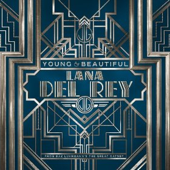

"Young and Beautiful" by Lana Del Rey is a haunting ballad from *The Great Gatsby* soundtrack. With melancholic vocals and orchestral instrumentals, it explores themes of love, youth, and time’s fleeting nature.

Young and Beautiful cover art by Young. wikipidia.
Ecstasy
XXXTENTACION
"Ecstasy" carries a wild, chaotic, and playful energy, reflecting carefree fun and reckless vibes. Unlike X’s more introspective songs, this one feels uninhibited and free-spirited, emphasizing friendship, chemistry, and the raw thrill of the moment.
Mugshot of rapper XXXTentacion by State of Florida - Florida Dept. of Corrections. wikipidia.
LA LA LAND
DVBSS and Shaun Frank
"LA LA LAND" embodies a carefree, euphoric, and dreamlike energy, evoking the feeling of escaping reality and indulging in the moment. It captures the essence of wild nights, youth, and the allure of Los Angeles.
Frank performing b2b with Steve Aoki at VELD Music Festival 2016 by Tobias Wang. wikipidia.
Talking to the Moon
Bruno Mars
"Talking to the Moon" carries a deep sense of longing, loneliness, and heartbreak. The song captures the pain of missing someone who feels unreachable, using the moon as a symbol of distant connection and hope.
This is a photo of American entertainer Bruno Mars performing live during his 24K Magic World Tour by slgckgc. wikipidia.
Life's a Mess
Juice WRLD and Halsey
"Life's a Mess" conveys a raw mix of pain, hope, and love, reflecting on struggles, heartbreak, and the healing power of finding someone who makes life worth living.
Life's a Mess by Juice Wrld and Halsey. wikipidia.
.jpg) Mugshot of rapper XXXTentacion by State of Florida - Florida Dept. of Corrections. wikipidia.
Mugshot of rapper XXXTentacion by State of Florida - Florida Dept. of Corrections. wikipidia.
 Life's a Mess by Juice Wrld and Halsey. wikipidia.
Life's a Mess by Juice Wrld and Halsey. wikipidia.